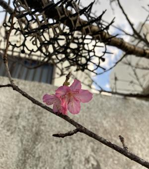

うるがいの話 ある日
最新: 太宰治の本【うるがいの話 ある日】とは 一日だけのプログです
『うるがいの話』の最新一日だけのプログで、通信料が少なく経済的だ。カニの画像をクリックすると全ての日付が載る『うるがいの話』サイトを表示します
|
|
【うるがいの話】 うるがい(ｳﾙｶﾞｲ urugai)とは、『もずくがに』の名前でとても大きくなります。 |
|---|---|
|
|
【カミマヤーの話】 猫のことを方言でマヤーといいます。カミマヤー（kamimayaa）とは、神の猫のことです。 |
|
【たながぁの音楽】 たながぁ（ﾀﾅｶﾞｰ tanagaa）とは手長えびのことで、何種類かあり大きいのは車 エビぐらいになります。 |

|
【ぶながぁの話】 ぶながぁ(ﾌﾞﾅｶﾞｰ bunagaa)とは、赤い髪の毛、赤い身体、そして身長は１ｍ２０ｃｍ ぐらい、川の蟹を食べているの目撃された。場所は沖縄県国頭郡大宜味村のと ある村僕の隣近所に住んでいる爺さんから、聞いた話です。 |
|
|
【ギーマの話】 ギーマ(giima)とは、山原の里山に咲くスズランに似た、 花を付けます。実は食べられます、 気が付くと口の周りが紫になっています。 |
2025年01月13日 (月）太宰治の本
17:03
英語の本で『走れメロス』を昨日の朝、読み終えた。夕方、「偉人
の年収」で太宰治の録画をみた。お！、シンクロか。大学２年生の
時、男性バスケット部の合宿で機械科の同期と、３年の女性のマネ
ージャーが、『人間失格』と思うが、太宰治の作品について議論を
していた。え！、『走れメロス』しかしらないぜ、あれからズーと
心に残留している。仕方ない、読むかと決める。

シンクロといえば、沖縄テレビ開局６５周年特別ドラマの録画を正
月みていたら、『ヒヤミカチ節』がエンディングで流れていた。昨
日、小乗のユーチューブ動画がチャンネルダッシュボードをみると
チャンネル登録者数が、１減少になっていた。オ、そうか中断して
いる『ヒヤミカチ節（早引き）』をアップするべと、島太鼓の完璧
を諦め、朝から作業を再開、なんとか夕方１６時過ぎに完了。
せっかくなので、指笛がスゴイ！！
『ヒヤミカチ節（早引き） 工工四 三線 指笛』
４分２秒 長いね
https://youtu.be/-usjFOxOqrY
ついでに桜のアップも
